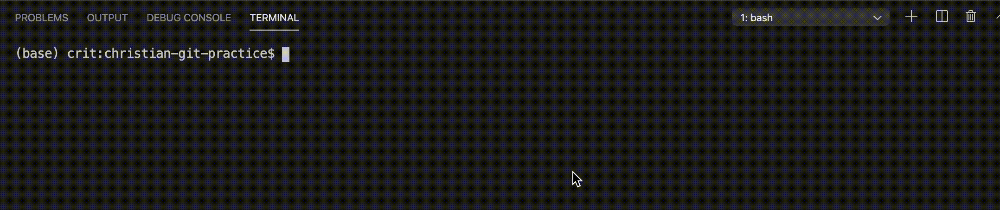
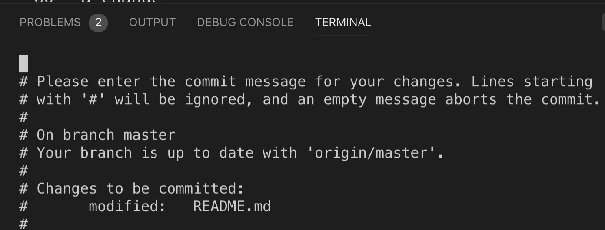
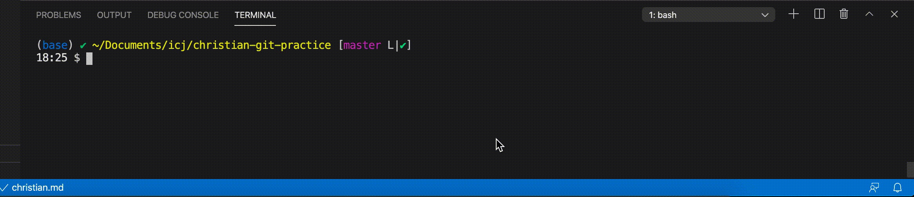

6 Using Git
Now we’ll go through the process of adding git to our project. A git project is called a repository, or “repo” for short. We’ll add git tracking to our existing folder, create a cloud version, then connect the two. Lastly, we’ll practice the git cycle of adding, commiting and pushing code.
6.1 Creating a repo
One you have your initial files, there are a number of steps you go through to create the repo, track files, save them, and then publish them to Github.
You’ll set up the repo for each new project in the class. And then once made, you’ll cycle through saving substeps often.
6.1.1 Initialize the repo
The first part step to making a repo is to tell you computer to track the project by “initializing” it. We’ll do these commands in our integrated Terminal.
- Use the following command in your terminal to “initialize” or start the repo.
git initIn response you’ll get something like …
$ git init
Initialized empty Git repository in /Users/ccm346/icj/christian-git-practice/.git/… with your repo path at the end.
6.1.2 Check status
Now to show that git is paying attention, let’s peek at what git things is going on with your repo by using git status. You don’t have do this step at this time … in fact you can do this one at any time you want.
git statusAnd the response you get …
$ git status
On branch main
No commits yet
Untracked files:
(use "git add <file>..." to include in what will be committed)
.gitignore
README.md
nothing added to commit but untracked files present (use "git add" to track)Git is telling us here that there are two files in our repo that are “untracked”, meaning they are there but git isn’t paying attention to them. Let’s fix that.
6.1.3 Stage changes
Next we will “stage” our files by adding them to the list of tracked files. You sometimes don’t want to track all your files, so you can add each one using their file name. That said we often track all of them, so we’ll use a shortcut:
git add .If it goes well, you WON’T GET A RESPONSE. Sometimes no response is good because it did what you wanted with no errors!
This added (or “staged”) a list of files for git to “track” or pay attention to. In our case we added all our files in the folder that aren’t outlined in the .gitignore file. You can run git status again if you want to see the difference.
6.1.4 Commit changes
Next we want to “commit” our files (which means save them) and include a message to say why we made changes to these files. ALWAYS include the -m flag when you commit, with a message.
Do this command in your Terminal. Note the quotes:
git commit -m "my first commit"You should get a response similar to this:
$ git commit -m "my first commit"
[main (root-commit) b4fde58] my first commit
2 files changed, 82 insertions(+)
create mode 100644 .gitignore
create mode 100644 README.mdHere is a gif of the whole process, though I have git status mixed in there.

Congratulations … you have now saved a snapshot in time of all these files.
6.2 Create your Github repo
- Go to github.com (and log in if you are not) and find the + sign at the top right.
- Click on that and choose New repository.
- Name the repo the same as your local one:
yourname-git-practice. (I always name my Github repo the same name as the folder on my computer for clarity, but know they technically could be different.) - Give it a description so you know what it is later.
- Keep it Public.
- DO NOT include a README here, or a gitignore or license.
- Click Create repository.
- Name the repo the same as your local one:
Once you create the repo, you’ll get a page back with a lot of code.
- Make sure the
SSHbutton is selected in the top box. (We are selecting this because during your computer setup we set up SSH keys between your computer and Github.) - Go to the second block “… or push an existing repository from the command line” and copy the first line there that starts with
git remote add origin. Pro Tip: Triple-click on the line to highlight it. - Paste that line into your Terminal and run it.

We shouldn’t need that second line there because our branch should already be named main.
- But we do a modified version of that last line:
git push origin mainHere is and explanation of Terminal commands we used.
- The
git remote addcommand created a connection between your local project and the repo you created on Github. Now your local files are are linked to those stored on the Internet. - With
git pushline you pushed your local files to the “origin” on Github on the “main” branch.
We only have to do the git remote add line once, but we’ll often use git push origin main to push your code.
- Go back to your Github repo and refresh the page you’ll see your new files listed there.
6.3 The git cycle
There are typically three steps to committing code in git:
git addto stage files that have changed.git commit -mto commit (or save) the files with a message about why.git push origin <branch>to publish the changes to Github. We will almost always be using themainbranch.
There is a fourth command we also use with the three above, but you can do it at any time to check where you are in the git workflow:
git statusto check what files have changed, etc.
We use these commands A LOT.
6.3.1 Adding a new file
We’re going to use the Integrated Terminal again (I’m just going to say “terminal” from now on) to create yet another a new file, commit it, and then push it to Github.
- Go into the terminal and use the
touchcommand to create a new file, using your name for the file name. It will be a Markdown file:
touch myname.md- You’ll notice the file show up in the list of files in the File Explorer on the left. Click on that and it will open the file in the editor.
- Add a headline and some text to the file, like this below:
# A new Markdown page
I'm learning git and Github and this repo will help me. Don't judge.6.3.2 Run the cycle
Now let’s check the status of our repo.
- Go into the Terminal and use the status command:
git statusHere is my command and response:
$ git status
On branch main
Untracked files:
(use "git add <file>..." to include in what will be committed)
christian.md
nothing added to commit but untracked files present (use "git add" to track)I have one untracked file, christian.md, and Git has been nice enough to tell me how to stage my file.
- Let’s add it specifically (but use your file name).
git add christian.mdHere is the command and response:
$ git add christian.md
(base) ✔ ~/icj/christian-git-practice [main L|●1]There wasn’t really a response back because it “worked”, but because I have the git-bash-prompt extension (which we installed earlier), I have some feedback. We haven’t talked about that yet, but that part [main L|●1] tells me we are on the main branch (more on that later) and that I have one staged file. Just watch how those signals change as we go through the cycle.
- Now let’s commit the file. We will also add a “message” to the commit using the flag
-m, which you should ALWAYS do.
git commit -m "adding my new file"Here is the call and response:
$ git commit -m "adding my new file"
[main eda683e] adding my new file
1 file changed, 3 insertions(+)
create mode 100644 christian.md
(base) ✔ ~/icj/christian-git-practice [main L|✔] If you don’t include -m "and some message" with your git commit command, odd things happen. See the bottom of this chapter.
Congrats! You have made your second commit, saving this point in time on your computer. Note the git bash prompt how has a checkmark at the end [main L|✔], noting there are no uncommitted changes.
Our next step is to push that new change to Github.
- Use the
git push origin maincommand to push this to Github.
git push origin mainHere is the command and the response:
$ git push origin main
Enumerating objects: 4, done.
Counting objects: 100% (4/4), done.
Delta compression using up to 8 threads
Compressing objects: 100% (3/3), done.
Writing objects: 100% (3/3), 410 bytes | 410.00 KiB/s, done.
Total 3 (delta 0), reused 0 (delta 0), pack-reused 0
To github.com:critmcdonald/christian-git-practice.git
75090ef..eda683e main -> main
(base) ✔ ~/icj/christian-git-practice [main L|✔] That’s a lot of mumbo jumbo that we don’t have to understand details of, we just have to recognize that it did “Writing” and you didn’t get an error.
Why origin main? This is the part that sends this to our Github repo to share with the world. The main part is the branch name, and that is something we may get into later in the semester.
- Now go back to your Github repo in your browser and hit refresh on your repo, and you’ll see the result there. Woo hoo!
6.3.3 Repeat: Add, commit, push
Now let’s make another change to your file and repeat the cycle.
- Go into VS Code and add a new sentence to your
myname.mdfile. - Use the terminal to check the status of your repo using
git status.
$ git status
On branch main
Changes not staged for commit:
(use "git add <file>..." to update what will be committed)
(use "git restore <file>..." to discard changes in working directory)
modified: christian.md
no changes added to commit (use "git add" and/or "git commit -a")
(base) ✔ ~/icj/christian-git-practice [main L|✚ 1] The return says we have one modified file, christian.md. Note the git-bash-prompt also shows ✚ 1 at the end, which means there is one file with changes.
Since I want to stage all the tracked files (even though it is only one here), we’ll use a fancy command to add “all” the modified files so we don’t have to name it. The period means “all changed files”.
- Do
git add .as noted below and you’ll get this response:
$ git add .
(base) ✔ ~/icj/christian-git-practice [main L|●1]There isn’t really a response for staging a file if it is successful, except for the git-bash-prompt changing to a red ●1.
- Now finish it out by adding a commit and message as noted below:
$ git commit -m "adding changes"
[main 3c4dbe4] adding changes
1 file changed, 2 insertions(+)
(base) ✔ ~/icj/christian-git-practice [main L|✔] - And then push the changes to Github:
$ git push origin main
Enumerating objects: 5, done.
Counting objects: 100% (5/5), done.
Delta compression using up to 8 threads
Compressing objects: 100% (3/3), done.
Writing objects: 100% (3/3), 316 bytes | 316.00 KiB/s, done.
Total 3 (delta 2), reused 0 (delta 0), pack-reused 0
remote: Resolving deltas: 100% (2/2), completed with 2 local objects.
To github.com:critmcdonald/christian-git-practice.git
eda683e..3c4dbe4 main -> main
(base) ✔ ~/icj/christian-git-practice [main L|✔] Well done! You’ve learned the basic git cycle and pushed code to Github.
6.4 Turn in your assignment
In Canvas, find “Version control assignment” and submit the URL of your Github repo.
6.5 If you forget -m
If you are committing files with git commit and you forget to add the -m flag or the message in quotes after it, you will get thrown into an odd program called VIM. It will look something like this:

If this happens:
- Press
ion your keyboard to get into insert mode. - Type your commit message into that first line.
- Hit the
esckey at the top left of your keyboard to get out of insert mode. - Type
:wqon your keyboard. Your cursor will move to the bottom of the window. That is OK. - Hit return to end the command.
You’ll get thrown back into your regular Terminal and be able to continue.
I don’t want to get into what the VIM commands are, but basically :wq means “write” and “quit”.
This GIF shows the process, but not the keystrokes, so use the directions above. Best yet, DON’T FORGET -m!

Notes to self:
- first-commit.gif uses master
- vim-commit.png uses master